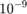
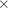

Loading data generated by the Multi Channel DataManager
As an example, lets load a data set with at least 1 analog stream:
data = McsHDF5.McsData('SOME_DATA_FILE.h5');
Contents
Up to this point, only the metadata has been read from the file. The actual data within the stream will be loaded as soon as you try to access the stream, for example in a plot function. The recorded data is organized as follows within the data structure:
- Top-level: General information and a cell array of McsRecording objects:
data
- Each recording is stored in its individual cell:
data.Recording{1}
- Each recording cell contains cell arrays of zero or more analog-, frame-, segment-, timestamp- and event streams. The only exception is the frame stream which has additional sub-structures, the FrameDataEntities.
data.Recording{1}.AnalogStream{1}
Units
For each stream, the associated data is stored in the field ChannelData (AnalogStream), SegmentData (SegmentStream with spike cutouts), AverageDataMean (SegmentStream with averages) FrameData (FrameDataEntity of FrameStreams), Events (EventStream) of Timestamps (TimeStampStream). Accessing one of these will load the data from the file. Per default, these values have already been converted during loading from ADC units to more useful units such as Volts. The actual unit it is represented in can be found for each stream in the fields Unit and Exponent (values 'V' and -9, respectively, mean that the data is stored in  V) of its Info structure:
data.Recording{1}.AnalogStream{1}.Info.Unit{1}
data.Recording{1}.AnalogStream{1}.Info.Exponent(1)
The time stamp associated with each sample is stored in the field {Channel,Frame,Segment}DataTimeStamps in microseconds. Similarly, the time stamps of events in the EventStream or time stamps in the TimeStampStream are stored in microseconds as well. For segment streams with averages, the field AverageDataTimeStamps denotes the time range used to compute the averages.
Data types
For some applications, it might be necessary to change the data type of the data and the time stamps, for example because of memory constraints. The default data type for the {Channel,Frame,Segment,Average}Data is 'double'. By specifying the data type during the loading of the file, you can halve the memory requirements by using 'single' instead.
cfg = []; cfg.dataType = 'single'; data = McsHDF5.McsData('SOME_DATA_FILE.h5',cfg);
This may, however, lead to very minor inaccuracies and one can encounter problems with Matlab functions that except the data to be in 'double' format.
Another possibility to potentially save even more memory is to specify
cfg = []; cfg.dataType = 'raw'; data = McsHDF5.McsData('SOME_DATA_FILE.h5',cfg);
With the 'raw' option , the data is stored in its original format internally in ADC units, so no conversion into meaningful units is performed. Because the data type of the original data can be 16 Bit integer (int16), this can reduce the memory requirements to 1/4th compared to the default 'double' format.
One can convert data loaded with the 'raw' option to meaningful units either manually (in this example for the first channel of an analog stream):
converted_data = (data.Recording{1}.AnalogStream{1}.ChannelData(1,:) - ...
data.Recording{1}.AnalogStream{1}.Info.ADZero(1)) * ...
data.Recording{1}.AnalogStream{1}.Info.ConversionFactor(1);
or by using the getConvertedData function which converts and returns the full data array:
cfg = [];
cfg.dataType = 'double';
converted_data = data.Recording{1}.AnalogStream{1}.getConvertedData(cfg);
Loading segments of streams
For some applications, it can be beneficial to load only segments of a stream instead of the full data. For example, due to the file size and the amount of available memory, loading a full AnalogStream might not be possible. Or, one might only be interested in a portion of the data.
This can be achieved by first loading the metadata:
data = McsHDF5.McsData('SOME_DATA_FILE.h5');
and then loading only a subset of channels and/or a specified time window. This results in a new McsAnalogStream object, which can, for example, still be accessed as usual by the plot function:
cfg = []; cfg.channel = [5 15]; % channel index 5 to 15 cfg.window = [42 1093]; % time range 42 s to 1093 s partialData = data.Recording{1}.AnalogStream{1}.readPartialChannelData(cfg); plot(partialData,[]); % plot the analog stream segment
Similar functions that allow loading parts of the full data set are available for all stream types:
data.Recording{1}.AnalogStream{1}.readPartialChannelData(cfg)
data.Recording{1}.EventStream{1}.readPartialEventData(cfg)
data.Recording{1}.FrameStream{1}.FrameDataEntity{1}.readPartialFrameData(cfg)
data.Recording{1}.SegmentStream{1}.readPartialSegmentData(cfg)
data.Recording{1}.TimeStampStream{1}.readPartialTimeStampData(cfg)
Plotting the data
Each stream has simple plot functions to allow a quick check whether the data is all right:
plot(data.Recording{1}.AnalogStream{1},[])
plot(data.Recording{1}.EventStream{1},[])
plot(data.Recording{1}.SegmentStream{1},[])
plot(data.Recording{1}.TimeStampStream{1},[])
If for example the event stream and the segment streams have not been accessed before, their data is loaded during the execution of the respective plot function.
Plot functions can also be executed at the recording or top level in order to get an overview over all streams in the recording, or even all streams in the data:
plot(data.Recording{1},[]);
plot(data,[]);
If the second parameter of the plot function is empty, the default parameters are used for plotting. Otherwise, one can specify configuration structures for more fine-grained plotting. For example, the following commands will plot channels 1 and 2 of the second analog stream:
cfg = [];
cfg.channel = [1 2];
plot(data.Recording{1}.AnalogStream{2},cfg);
Each plot function has its own set of options, so you need to check the individual help functions for the specifics:
help McsHDF5.McsEventStream.plot
You can specify these configuration options also in higher level plot functions to achieve the same thing:
cfg = [];
cfg.analog{2}.channel = [1 2];
plot(data.Recording{1},cfg);
cfg = [];
cfg.conf.analog{2}.channel = [1 2];
plot(data,cfg);
You can also specify additional options in the plot function. These are forwarded to the underlying MATLAB plotting functions. The following command produces a time series plot of the first analog stream with thick dashed red lines:
plot(data.Recording{1}.AnalogStream{1},cfg,'--r','LineWidth',5);
Frame streams
Frame streams have to be treated in more detail, because they can lead to potentially very large data sets. They comprise samples from a 2D array of recording channels for a total of possibly several thousand channels. Because of this, it can be problematic to store the full data cube (channels_x  channels_y time) in memory. If you know which parts of the data you are interested in, you can also load just a small 'cuboid' (a 'hyperslab' in HDF5 terminology) to memory:
First, load just the metadata:
frameData = McsHDF5.McsData('FILE_WITH_FRAME_DATA.h5');
If we would execute one of the following commands, the whole frame would be loaded, which we want to avoid to save memory.
size(frameData.Recording{1}.FrameStream{1}.FrameDataEntity{1}.FrameData)
plot(frameData.Recording{1}.FrameStream{1}.FrameDataEntity{1},[])
plot(frameData,[])
To avoid memory problems, you can load a region of interest as follows:
cfg = []; cfg.window = [0 0.5]; % 0 to 0.5 s cfg.channel_x = [10 30]; % channel "rows" 10 to 30 cfg.channel_y = []; % all channel "columns" partialData = frameData.Recording{1}.FrameStream{1}.FrameDataEntity{1}.readPartialFrame(cfg);
where 'window', 'channel_x' and 'channel_y' are 2x1 vectors of [start end] indices. For 'window', these are given in seconds with respect to the FrameDataTimeStamps, for the channels these are channel indices. If any of these is an empty array, the whole dimension is used. partialFrame contains only the specified subregion of the frame.
Plotting frame data
Due to the high dimensionality, finding useful plotting functions for frame data with several thousands of channels can be tricky. Three options are provided here:
3D-plot of a single slice through the frame, i.e. the amplitudes of all channels for a single time point:
cfg = [];
cfg.window = 0.1; % 100 ms
plot(partialData,cfg);
A 2D-array of line plots, each depicting the signal at each channel in a specified time range:
cfg = [];
cfg.window = [0.1 0.2]; % 100 ms to 200 ms
plot(partialData,cfg);
A "movie" of the 3D-plots:
clf cfg = []; cfg.start = 0.1; cfg.end = 0.2; frameMovie(partialData,cfg);